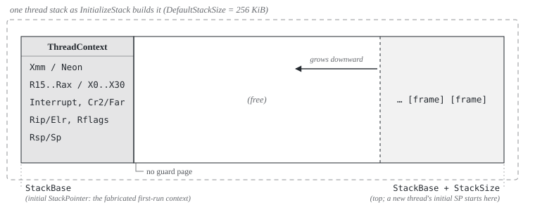
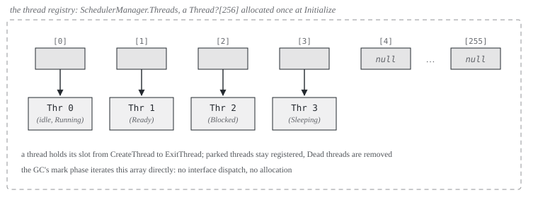
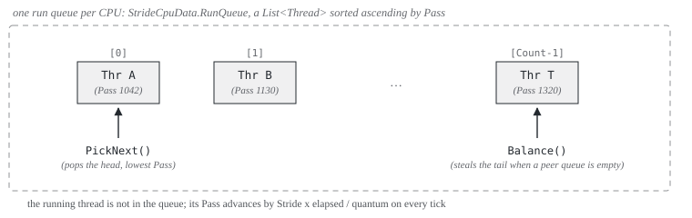

Overview
The scheduler is preemptive, pluggable, and by default virtual-time fair-share. Every context switch happens in interrupt context: the hardware tick lands, the interrupt stub has already saved the current thread's registers on its stack, and the scheduler decides which saved stack the interrupt returns into. There is no dedicated scheduler thread and, today, no working voluntary switch: a thread runs until an interrupt exit switches away from it (the tick, or a device interrupt whose handler woke another thread), until it parks on a blocking primitive, or until it exits. Each linked term has a short background note in the glossary; pluggable links to the how-to instead.
The design splits policy from mechanism. Mechanism is fixed and shared: the thread registry, the lifecycle transitions, the timer-tick entry, the assembly that saves and restores registers, and the bridge the GC scans threads through. Policy, everything that decides which thread runs when, is a single interface, IScheduler, that any algorithm can implement. The default implementation is Stride, a virtual-time fair-share scheduler; Writing a scheduler shows how to replace it.
![The policy-mechanism split. Top box, mechanism, fixed: SchedulerManager for lifecycle dispatch, thread registry and tick entry; Thread and PerCpuState as extensible TCB and per-CPU state; the IRQ stubs in assembly for register save and restore; Mutex, ConditionVariable, Monitor and InterruptEvent parking and unparking through SchedulerManager; the GC stack-scan bridge walking the thread registry during collections. An arrow labeled IScheduler interface leads to the bottom box, policy, pluggable: StrideScheduler, the default virtual-time fair-share, and alternatives such as RoundRobin, MLFQ, EDF or FIFO sketched in Writing a scheduler.](images/diagrams/sched-mechanism-policy.svg)
At boot, LibraryInitializer wires the whole thing up when the feature switch is on: it calls SchedulerManager.Initialize with the CPU count, installs a StrideScheduler, creates one idle thread per CPU (the idle thread is the booting kernel itself, so it owns no separate stack), flips SchedulerManager.Enabled, and finally starts the scheduler timer with a 10 ms quantum. From that first tick on, the kernel's main flow is just the idle thread, preempted like any other.
Everything the scheduler does is constrained by the two consumers that see its state from the outside: the timer interrupt and the garbage collector. The interrupt can fire at any instruction boundary: after one machine instruction, before the next, anywhere in the stream, splitting any code sequence longer than one instruction. So every state transition runs with interrupts disabled, and the blocking primitives follow a strict park protocol so a wake-up arriving mid-transition is never lost. And the garbage collector walks the thread registry during collections, so every live thread must be registered and its saved state must be exactly where the registry says it is.
The code lives in src/Cosmos.Kernel.Core/Scheduler/. SchedulerManager is the mechanism; Stride/ holds the default policy; the synchronization primitives and the alarm service sit in their own files next to them. The architecture-specific register save and restore lives in the native projects. The full file map is in Source files at the end of this article.
Thread model
This section answers what a thread physically is: the control block, the stack it runs on, the register snapshot that preserves it across preemption, and the registry that makes it visible to the scheduler and the GC.
The Thread control block
A Thread is a managed class on the GC heap:
| Field | Purpose |
|---|---|
Id, CpuId |
Globally unique id (a bare incrementing counter) and the assigned CPU |
State |
One of Created, Ready, Running, Blocked, Sleeping, Dead |
Flags |
KernelThread, IdleThread, Pinned, Managed; bits 8 to 15 are reserved for schedulers |
StackBase, StackSize, StackPointer |
The stack allocation and the saved stack pointer (see below) |
InstructionPointer |
The entry point, staged into the initial context |
CreatedAt, LastScheduledAt, TotalRuntime, WakeupTime |
Accounting; WakeupTime is the sleep deadline in Stopwatch ticks |
AllocContext |
The thread's TLAB (see the GC article) |
_threadStaticStorage |
The backing store for [ThreadStatic] fields, handed to CoreLib by ref |
SchedulerData |
A single object? slot the active scheduler attaches its bookkeeping to (inherited from SchedulerExtensible) |
Two flags change behavior elsewhere:
Pinned: the thread must not migrate between CPUs. Stride'sSelectCpuandBalancehonor it.Managed: the entry parameter is aGCHandleof aSystem.Threading.Thread, and the entry trampoline calls into CoreLib'sThread.StartThreadinstead of decoding the parameter as a freeAction.
Per-thread stack
Thread.InitializeStack allocates one contiguous block, DefaultStackSize = 256 KiB when the creator does not specify a size (explicit requests are honored down to a 64 KiB floor; see Creation and first run). The register context of a thread that has not yet run is fabricated at the bottom (the lowest address, rounded up to 16 bytes), and the usable call stack grows downward from the top toward it:

StackPointer always points at the current saved context, so the IRQ stub knows where to restore from and the GC knows where a parked thread's saved state begins. For a Created thread that is the fabricated context at the base shown above, which the first run consumes; from then on, every preemption saves a fresh context at whatever stack position the interrupt hit, and StackPointer follows it. Two size floors matter (issue #433):
DefaultStackSizemust stay above 128 KiB, CoreLib'sMinExecutionStackSize:RuntimeHelpers.EnsureSufficientExecutionStackcompares the live stack pointer against the bounds the runtime reports, and a smaller stack makes it throw on every call.- The boot stack is separate: the kernel asks Limine for 1 MiB, and
BootStackcaptures its top before any managed code runs. Code running before the scheduler starts (and the idle thread, which owns no allocation of its own) reports these bounds instead.
There is no guard page: a thread that recurses past StackBase runs straight into whatever the allocator placed below it, and nothing detects the overflow.
The saved context
ThreadContext mirrors, field for field, the frame the IRQ stub pushes when an interrupt fires. That equivalence is the core trick: preempting a thread and creating a thread produce the same structure, so resuming either is the same code path.
| x64 (448 bytes) | ARM64 (816 bytes) | |
|---|---|---|
| SIMD area | Xmm[256] (XMM0 to XMM15) |
Neon[512] (Q0 to Q31) |
| General registers | R15 up to RAX (15 slots in memory order; the stub pushes RAX first) | X0 to X30 |
| Fault info | Interrupt, CpuFlags, Cr2, plus a TempRcx relay slot |
Interrupt, CpuFlags (ESR_EL1), Far (FAR_EL1) |
| Return frame | Rip, Cs, Rflags, Rsp, Ss (the iretq frame) |
Sp, Elr, Spsr |
(The rows follow x64's memory order; on ARM64 the return frame sits before the fault info.)
For a new thread, ThreadContext.Initialize fabricates the snapshot a preempted thread would have: every register zeroed except the entry argument (RDI on x64, X0 on ARM64), a zero frame pointer so stack walks terminate, the entry point in the resume slot (Rip / Elr), and an aligned initial stack pointer (on x64, top aligned to 16 then minus 8, the post-call state the ABI expects; on ARM64, just aligned, since AArch64 keeps SP 16-aligned at all times).
Thread registry
SchedulerManager owns a flat, fixed Thread?[256] array (Thread.MaxThreadCount), allocated once at Initialize and exposed as SchedulerManager.Threads. Every live thread occupies one slot from CreateThread until ExitThread clears it; blocked and sleeping threads stay registered even though no run queue holds them.

The registry exists for the GC. During a collection the mark phase iterates the array directly, with no interface dispatch (interface dispatch can allocate, and nothing may allocate mid-collection), and scans every registered thread's stack; a thread missing from the registry would keep running while the GC frees the objects its stack points to. That is also the sharp edge of the fixed capacity: on a full registry, RegisterThread logs a warning and drops the registration, but the thread is still queued and still runs, unscanned (issue #444).
Lifecycle
Every transition runs with interrupts masked: the SchedulerManager entry points below take InternalCpu.DisableInterruptsScope(), and the switch itself (ScheduleFromInterrupt) relies on already running in interrupt context. Each entry point notifies the active policy through the matching IScheduler hook; the table lists what else it does:
stateDiagram-v2
[*] --> Created: InitializeStack
Created --> Running: first pick (new-thread tail)
Running --> Ready: preempted (OnTick says reschedule)
Ready --> Running: ScheduleFromInterrupt picks it
Running --> Blocked: BlockThread (Mutex, CV.Wait, InterruptEvent)
Running --> Sleeping: MarkSleeping (Sleep, CV.WaitTimeout)
Blocked --> Ready: ReadyThread (Release / Signal)
Sleeping --> Ready: CheckSleepingThreads (deadline) or ReadyThread
Running --> Dead: ExitThread
Dead --> [*]: registry slot cleared
| Entry point | State change | Policy hook | Also |
|---|---|---|---|
CreateThread |
none (InitializeStack already set Created) |
OnThreadCreate |
registers the thread in the registry |
ReadyThread |
Ready, unless the thread is still Created |
OnThreadReady |
sets the per-CPU _needReschedule flag |
BlockThread |
Blocked |
OnThreadBlocked |
sets _needReschedule |
MarkSleeping |
Sleeping, after computing WakeupTime |
OnThreadBlocked |
no halt; the caller parks itself (see the park protocol) |
Sleep |
via MarkSleeping |
then halts once, only if still Sleeping |
|
YieldThread |
none | OnThreadYield |
|
ExitThread |
Dead |
OnThreadExit |
runs the exit callback, returns the TLAB to the GC, clears the registry slot |
Three details are deliberate:
- A
Createdthread keeps that state even afterReadyThreadqueues it.ScheduleFromInterruptusesState == Createdto detect a first run, which needs the special exit path described below. ReadyThreadandBlockThreadset_needRescheduleso the next interrupt exit reschedules immediately. Without it, a thread woken by a device interrupt would sit in the run queue for up to a full quantum, and a thread that just blocked would spin in its halt loop for the rest of its quantum.WakeupTimeis stored inStopwatchticks, not nanoseconds. The tick check compares againstStopwatch.GetTimestamp(), and converting through nanoseconds distorted timeouts by 16x on ARM64's 62.5 MHz timer.
Creation and first run
Threads are created through one seam: the SystemNative_CreateThread export in libSystemNative.cs, which backs CoreLib's Interop.Sys.CreateThread P/Invoke. So new System.Threading.Thread(...).Start() in kernel code flows through CoreLib into this export, which rounds the requested stack size up to a page multiple (floor 64 KiB), builds a Scheduler.Thread flagged Managed, points its context at the ThreadNative.EntryPointStub trampoline, and calls CreateThread plus ReadyThread. (ThreadPlug plugs only Thread.Yield, which reports success without yielding; Thread.CreateThread itself runs CoreLib's unmodified body.)
The first run of a Created thread cannot end in iretq, because there is no interrupted frame to return into. Instead the IRQ exit path is told (via a flag staged from C#) to take the new-thread tail: it loads the entry point and the fabricated initial stack pointer from the context, re-enabling interrupts along the way, and jumps. The landing point is always EntryPointStub, which forwards to SchedulerManager.InvokeCurrentThreadStart: it decodes the parameter (CoreLib Thread.StartThread for Managed threads, a GCHandle<Action> otherwise), runs it inside a catch-all so a throwing thread exits with code 1 instead of taking down the kernel, and ends in ExitThread followed by a halt loop. After that first entry, the thread is indistinguishable from any preempted thread.
Preemption
This section answers how the tick becomes a context switch: which hardware fires it, what the interrupt path saves, how the policy's decision is staged, and how the exit path consumes it.
Timer sources
The scheduler does not own a timer; it exposes OnTimerInterrupt and lets the platform call it. The wiring differs per architecture:
| Architecture | Scheduler tick | Software timers (Timers and alarms) |
|---|---|---|
| x64 | LAPIC timer, vector 239, periodic, 10 ms | PIT on IRQ 0, one-shot re-armed per interrupt |
| ARM64 | Generic Timer, INTID 30, re-armed per interrupt, 10 ms | same interrupt, dispatched before the scheduler tick |
In both cases the handler passes the configured interval as elapsedNs, not a measured elapsed time, and computes the saved-context address itself: the managed IRQ entry receives a pointer to the general-register block, and the handler subtracts the SIMD save area (256 bytes on x64, 512 on ARM64) to recover the ThreadContext base. That address is what a preempted thread's StackPointer will hold.
The tick
sequenceDiagram
participant ASM as IRQ stub (asm)
participant TH as Timer handler (LocalApic / GenericTimer)
participant SM as SchedulerManager
participant SC as IScheduler (policy)
Note over ASM: Timer IRQ, interrupts disabled
ASM->>ASM: push GPRs, fault info, SIMD registers (a ThreadContext at RSP)
ASM->>TH: __managed__irq(GPR block pointer)
TH->>SM: OnTimerInterrupt(cpuId, contextBase, intervalNs)
SM->>SM: CheckSleepingThreads (ReadyThread every expired sleeper)
SM->>SC: OnTick(state, current, elapsedNs)
SC-->>SM: needsReschedule
alt needsReschedule
SM->>SM: ScheduleFromInterrupt
SM->>SC: PickNext(state)
SC-->>SM: next (null means idle thread)
alt next is not prev
SM->>SM: prev.StackPointer = contextBase, demote Running to Ready
SM->>SC: OnThreadYield(state, prev) if prev stayed Ready
SM->>ASM: stage new-thread flag, then target stack pointer
end
end
SM-->>TH: return
TH-->>ASM: return
alt a switch is staged
ASM->>ASM: switch RSP to the target context, restore registers
alt new thread
ASM->>ASM: load entry RIP and initial RSP, jump (no iretq)
else
ASM->>ASM: iretq into the resumed thread
end
else
ASM->>ASM: restore registers, iretq into the same thread
end
The policy never touches a register. Everything between the stub's save and restore is plain managed C# operating on Thread and PerCpuState; the handoff in each direction is one pointer. Two conditions guard the switch-out bookkeeping: prev is demoted to Ready only if it was Running, and OnThreadYield (the policy's re-queue hook) runs only if it ended up Ready. A thread that blocked or went to sleep just before the tick keeps its parked state and is not re-queued.
The staging itself is two writes into native globals: the new-thread flag first, then the target stack pointer (_context_switch_target_rsp; nonzero means switch). Every one of the 256 interrupt vectors checks that global on exit, so any interrupt can carry out a staged switch, not just the timer. The staging variables are single globals, one more thing that pins the kernel to one CPU for now.
Waking from an interrupt handler
Device interrupt handlers wake threads too: an NVMe completion fires on its MSI-X vector and signals an InterruptEvent whose waiter must run. The tick path alone would leave that thread queued for up to a full quantum, so wake-ups take a shortcut. ReadyThread (and BlockThread) set a per-CPU _needReschedule flag, and the interrupt dispatcher calls ReschedulePendingFromIrq when a handled hardware interrupt exits: if the flag is set and no switch is already staged for this interrupt, it runs ScheduleFromInterrupt right there, on the device interrupt's own exit path. The already-staged check matters: the timer handler may have staged a switch during the same interrupt, and a second ScheduleFromInterrupt would save this frame's stack pointer into a thread whose real context lives elsewhere.
What there is not: a voluntary switch
SchedulerManager.Schedule and ContextSwitch.Switch exist in the tree but have no callers, and neither can complete a synchronous switch: they only stage a target stack pointer, the staged switch is consumed on an interrupt exit, and a voluntary caller has no interrupt-saved register frame for that exit to restore (Schedule's helper does not even save the outgoing stack pointer). The one voluntary-yield entry that works, the runtime's RhYield, re-queues the current thread through OnThreadYield and then halts; the actual switch happens at the next tick. A true synchronous switch would need its own save path (the equivalent of the IRQ stub's, entered from a call instead of an interrupt), which does not exist yet.
The Stride policy
Stride scheduling is proportional-share scheduling with deterministic, virtual-time bookkeeping. Each thread holds Tickets (default 100), its share weight. From the tickets follows a Stride, the constant Stride1 (2^20) divided by tickets, and a Pass, the thread's virtual time. The run queue stays sorted by Pass and PickNext always pops the lowest: the thread that has consumed the least of its share runs next. As a thread runs, its Pass advances proportionally to runtime (Stride * elapsed / quantum, so exactly one stride per full 10 ms quantum), and more tickets mean a smaller stride, a slower-rising Pass, and more CPU.
Each CPU carries a StrideCpuData: the run queue (a List<Thread> kept sorted ascending by Pass), TotalTickets (the aggregate share, which doubles as the load metric), and GlobalPass, the CPU's own virtual clock, advanced at the aggregate rate (Stride1 / TotalTickets per quantum). GlobalPass is the reference point that wakeup placement and priority changes are computed against.

What Stride does in each hook:
| Hook | Behavior |
|---|---|
InitializeCpu / ShutdownCpu |
Create / drop the per-CPU StrideCpuData |
OnThreadCreate |
Attach StrideThreadData (100 tickets, Pass = 0); the thread is not queued yet |
OnThreadReady |
Place the thread (see wakeup placement below), insert sorted by Pass, add its tickets to TotalTickets |
OnThreadBlocked |
Save Remain = Pass - GlobalPass, remove from the queue, subtract tickets |
OnThreadExit |
Remove from the queue, subtract tickets, drop the thread's bookkeeping |
OnTick |
Advance the current thread's Pass and the CPU's GlobalPass; reschedule if the queue head's Pass is strictly lower, or the quantum elapsed |
OnThreadYield |
Clamp Pass up to GlobalPass if it fell behind, then re-insert |
PickNext |
Pop the head (lowest Pass); null on an empty queue, and the manager runs the idle thread |
OnPickFailed |
Re-insert a thread the manager could not switch to |
SelectCpu |
Honor Pinned; otherwise accept a CPU whose load (TotalTickets) is under 80% of the best load found so far |
Balance |
Only when this CPU's queue is empty: steal the tail thread (highest Pass) from the peer with the longest queue, if that queue holds at least two and the tail is not Pinned |
OnThreadMigrate |
Move the tickets between CPUs and rebase Pass on the destination's GlobalPass + Remain |
SetPriority / GetPriority |
Set / read tickets; on a change, the current offset from GlobalPass is scaled by the stride ratio so relative position survives |
Wakeup placement is where fairness needs judgment. A woken thread cannot keep its old Pass: it fell far behind GlobalPass while parked, and running it until it caught up would starve everyone else. The code carries two placements for this:
- a starvation cap,
Pass = max(GlobalPass + Remain, GlobalPass - 2 * Stride1):Remainrestores the fraction of its quantum the thread had left when it blocked, and the cap bounds how far behindGlobalPassany waker can be placed; - an interactive boost,
Pass = GlobalPass - Stride / 2, half a quantum of head start for threads classified interactive (sleeps long relative to accumulated runtime), so input-driven threads preempt batch work promptly.
Neither runs today: the placement branch tests for State == Blocked, but the manager marks the thread Ready before calling the hook, so every wakeup takes the fallback path, Pass = GlobalPass (issue #445). That is still fair (a waker rejoins at the virtual present, with no catch-up advantage and no starvation), just blunter than designed.
Two implementation notes carry over to anyone touching this code. Queue removal runs under DisableInterruptsScope and scans with ReferenceEquals instead of List.Remove, because EqualityComparer<T>.Default needs runtime helpers the kernel does not have. And OnTick tolerates a thread whose SchedulerData is already null (it exited mid-quantum) by rescheduling if anything else is queued.
Synchronization primitives
Blocking synchronization sits on top of three manager calls, BlockThread, ReadyThread, and MarkSleeping, so it works unchanged under any policy. The primitives are: SpinLock (non-blocking), Mutex, ConditionVariable, Monitor (their composition), and InterruptEvent (interrupt-to-thread completion). All of them live next to the scheduler because their correctness depends on scheduler internals, most of all on the park protocol below.
SpinLock and the IRQ-safe scope
SpinLock is a single-word CAS lock with two acquire forms, and choosing the right one is the whole contract. Plain Acquire/Release is only safe for locks never touched from interrupt context: on one CPU, an interrupt handler that spins on a lock its own interrupted thread holds spins forever. AcquireIrqSafe returns a scope that disables interrupts before taking the lock and restores them after releasing it, in that order on both ends, so an interrupt can never fire while the lock is held on this CPU. Every lock in Mutex, ConditionVariable, and InterruptEvent is taken exclusively through AcquireIrqSafe: their wait sides hold the lock with interrupts masked, so a plain-acquire holder preempted mid-section would deadlock every other spinner, and InterruptEvent's signal side additionally does run from interrupt handlers.
The park protocol
A blocking primitive must move a thread from running to parked while a wake-up can arrive at any instruction, from the timer path or from a device interrupt. The failure mode is the lost wakeup: the waiter is readied before it finishes blocking, the block then lands on top, and the thread never wakes (issue #357, which was exactly this race in ConditionVariable.Wait). Every blocking path in the kernel follows the same three rules:
flowchart TD
A["Take the primitive's lock with AcquireIrqSafe
(interrupts now masked)"] --> B["Insert self into the wait queue"]
B --> C["Release any covering lock (CV releases the mutex)"]
C --> D["BlockThread / MarkSleeping (state flips while IRQs are still masked)"]
D --> E["Dispose the scope (interrupts back on: a pending wake can land now)"]
E --> F{"Still Blocked / Sleeping?"}
F -->|yes| G["Halt until an interrupt"]
F -->|no| H["Already woken: continue"]
- One atomic section. Queue insertion, any covering release, and the state flip happen inside a single
AcquireIrqSafescope. A wake cannot interleave, because the signal side needs the same lock and interrupts are masked. - State-guarded halt. The halt after the scope is conditional on the thread still being parked. A wake that lands in the window between scope exit and halt flips the state back to
Ready, and the guard sees it; an unconditional halt would sleep through it. - Membership-based results. For timed waits, "was I signaled or did I time out" is answered by wait-queue membership, not by flags: a signal removes the thread from the queue, so after waking, still-in-queue means timeout (and the thread removes its own stale entry so a later signal cannot be spent on it).
MarkSleeping exists as a separate entry precisely for rule 1: Sleep is MarkSleeping plus its own guarded halt, but ConditionVariable.WaitTimeout needs the state flip inside its lock scope, so it calls MarkSleeping there and halts itself afterwards.
Mutex
Mutex is a recursive blocking lock: an owner reference, a recursion depth, and a FIFO wait list. A contended acquire parks by the protocol above on the first failed attempt; there is no spin-then-park stage. Release at depth zero performs a direct hand-off: still under the lock, it dequeues the head waiter and makes it the owner before readying it, so a running thread cannot barge in and retake the mutex during the waiter's wake-up latency. The woken waiter recognizes the hand-off (it owns the mutex it never explicitly acquired) and returns.
Two special cases: the idle thread never parks (blocking it would just get it re-picked as the idle fallback), so it spin-acquires with interrupts enabled between attempts. And with no thread context at all (scheduler off or not yet ready), Acquire/Release are no-ops and TryAcquire succeeds, so early-boot code can run through mutex-protected paths.
ConditionVariable and Monitor
ConditionVariable is wait/signal with mutex integration. Wait(mutex) inserts itself, releases the mutex, and blocks, all in one scope (rule 1; releasing the mutex outside the scope is the #357 bug), then re-acquires the mutex on wake. WaitTimeout parks through MarkSleeping with the deadline, and reports signaled-vs-timeout by membership (rule 3). Signal readies the FIFO head; SignalAll readies everyone.
Monitor composes one Mutex and one ConditionVariable into the classic monitor shape; its Signal/SignalAll also release the mutex, so signaling exits the monitor.
InterruptEvent
InterruptEvent is the interrupt-to-thread completion primitive: an interrupt handler signals it, a thread waits on it. The NVMe driver hangs one on every command slot and signals it from the MSI-X completion handler.
Signals are counted, not latched: two signals wake two waiters, and signals arriving with no waiter are banked and consumed one per future wait (auto-reset). The signal side is interrupt-safe by construction: it takes the IRQ-safe lock, bumps the count, dequeues one waiter, and calls ReadyThread, with no allocation and no interface dispatch on the path (the waiter list is pre-sized to four, so typical waits do not allocate under the lock the interrupt handler spins on either). The ReadyThread sets _needReschedule, so the woken waiter runs on this same interrupt's exit path (see Waking from an interrupt handler).
The wait side follows the park protocol, with two twists. Callers without park capability (the idle thread, or code running before the scheduler is ready) poll the signal count with interrupts enabled between checks and deliberately never halt: if the signaling interrupt fired just before a halt, no further interrupt might ever arrive to end it. And Wait(maxIterations) bounds the wait by loop passes, a hang-breaker for lost device interrupts rather than a clock.
Timers and alarms
Deferred work has two tiers, split by execution context. The rule is in the API docs of both: interrupt context must not block, thread context may.
TimerManager.Schedule |
AlarmSystem |
|
|---|---|---|
| Callback runs in | interrupt context (the timer tick) | a dedicated kernel thread |
| May block, take a Mutex | no | yes |
| Resolution | the timer device's tick | the scheduler tick |
| Backed by | SoftwareTimer registry on the timer device |
a deadline-sorted list, a Mutex, a ConditionVariable |
| One-shot / recurring | both | both (recurring minimum 1 ms) |
The first tier is hardware-near: TimerDevice keeps a registry of SoftwareTimer countdowns and drives them from its tick interrupt (HandleTick), invoking due callbacks right there in interrupt context. On x64 the PIT provides this tick, separate from the LAPIC scheduler tick; on ARM64 the single Generic Timer interrupt drives both, software timers first.
The second tier is a service built entirely on the primitives above, and doubles as a reference use of them. AlarmSystem keeps its alarms in a list sorted by deadline, guarded by a Mutex; a lazily started kernel thread waits on a ConditionVariable with WaitTimeout clamped to the next deadline (or a 1 s heartbeat when idle), fires due alarms outside the lock inside a catch-all, and re-arms recurring alarms from now rather than from their nominal due time, so a late wake does not produce a catch-up burst. Add signals the condition variable so a new nearest deadline shortens the running wait. Because insertion and waiting share the mutex, no alarm can slip in unseen between the deadline computation and the park (rule 1 again, one level up).
GC integration
The scheduler is the GC's source of truth for stack roots; the full story is in the GC article. The scheduler-side contract has three parts:
- The registry is the root set. The mark phase iterates
SchedulerManager.Threadsdirectly, a flat array walk with no interface dispatch and no allocation. Every registered, non-Deadthread gets scanned; a thread the registry does not hold does not exist for the GC. - Parked threads are scanned conservatively from their saved state. For each thread that is not currently running, the GC reads the saved
ThreadContextthroughThread.GetContext()and treats the saved general registers as root candidates (the SIMD area and the flags are skipped), then scans every pointer-sized word fromStackPointerto the stack top. Precise scanning of parked threads needs return-address hijacking, tracked in issue #385. - The triggering thread is scanned precisely. The thread that entered
Collectreached it through a managed call chain, so its stack is walked frame by frame from GCInfo (see Precise Stack Scanning); the scheduler contributes the stack bounds.
Conservative scanning is also why TryMarkRoot validates aggressively: a stack word is only a candidate if it points into the GC heap, and the MethodTable pointer found there must lie outside the heap and above AddressSpace.KernelSpaceStart (the kernel higher half) before it is dereferenced.
Collections run with interrupts disabled on the triggering thread, so no tick, no switch, and no interrupt handler can mutate thread state mid-scan. The same discipline protects the other direction: because AllocObject is interrupt-atomic too, interrupt handlers (the tick itself, input drivers) may allocate.
Runtime bridge
The runtime and CoreLib see the scheduler through exports in Runtime/Thread.cs:
| Export | Behavior |
|---|---|
RhGetCurrentThreadStackBounds |
The current thread's real [StackBase, StackBase + StackSize); the boot stack's bounds before the scheduler runs, for the idle thread, and when the switch is off (issue #433) |
RhGetThreadStaticStorage |
Ref to the current thread's [ThreadStatic] backing store (a static spine when the switch is off) |
RhGetDefaultStackSize |
Thread.DefaultStackSize, 256 KiB |
RhSetThreadExitCallback |
Stores the callback ExitThread invokes; CoreLib uses it for managed thread cleanup |
RhYield |
Re-queues the current thread (YieldThread) and halts until the next tick; see What there is not |
RhSpinWait |
A counted empty loop |
RhGetThreadEntryPointAddress, RhSetCurrentThreadName |
Stubs: zero, and a serial log |
The native side of switching is ContextSwitchNative: five tiny [SuppressGCTransition] imports, identical on both architectures. The staging pair (_native_set_context_switch_sp, _native_set_context_switch_new_thread) and the staged-pointer getter (whose nonzero read doubles as the "switch already staged" guard) drive the exit path; _native_get_sp reads the live stack pointer for the GC's scan of a running thread; and _native_capture_regdisplay bootstraps the GC's precise stack walk.
Feature switch
The scheduler is gated by CosmosEnableScheduler in the kernel .csproj, surfaced as CosmosFeatures.SchedulerEnabled and checked at three levels:
SchedulerManager.IsEnabledmirrors the switch. The creation entry points (Initialize,CreateThread,ReadyThread) throw when it is off; with the switch off nothing else is reachable, since no thread ever exists.SchedulerManager.Enabledis the runtime arm switch.LibraryInitializerflips it only after the manager, the policy, and the idle threads are fully wired, and the interrupt-side entries (OnTimerInterrupt,ReschedulePendingFromIrq) return early until it is set, so the first tick cannot race a half-built scheduler.SchedulerManager.IsReady(IsEnabledplus initialized state) is the guard for touching per-CPU state.MutexandInterruptEventcheck it literally;ConditionVariableand the runtime exports reach the same effect through the feature check plus null propagation on the CPU state. When the scheduler is not ready they degrade:Mutexbecomes a no-op,InterruptEventpolls instead of parking, the stack bounds fall back to the boot stack.
Limitations and evolution
- One CPU.
GetCurrentCpuId()returns 0, the switch-staging variables are single globals, and nothing ever callsSelectCpuorBalance. The structures are per-CPU-shaped (that is whatPerCpuStateis for), but SMP needs per-CPU staging, a real CPU id source, and a balancing call site. - No voluntary switch. A yielding or blocking thread waits for the next interrupt to actually switch away; on an idle system that is up to one quantum of latency, mitigated by
_needRescheduleon any interrupt exit. The fix is a synchronous save path symmetrical to the IRQ stub's. - The registry caps at 256 threads and fails open. Registration is dropped with a log line while the thread still runs; the GC then never scans its stack, which is a use-after-free generator, not a graceful degradation (issue #444).
- No stack protection. No guard page, and the saved context sits in the overflow path of the thread's own frames.
- No priority inheritance.
Mutexwakes FIFO and hands off directly, which is fair but inverts priorities: a low-tickets holder is not boosted while a high-tickets thread waits. TheSetPriorityhook is the raw material for an inheritance protocol; no policy implements one. - Parked threads pin their referents. The conservative scan of parked stacks is the GC-side cost of preemption at arbitrary instructions; return-address hijacking (#385) is the exit.
- Stride's wakeup placement is inert. The starvation cap and the interactive boost are coded but unreachable (#445): the state flip lands before the hook that tests it, so every wakeup rebases to
GlobalPass. Reviving the branch also means fixing the heuristic's own quirks, catalogued in the issue. - The tick is nominal.
OnTimerInterruptreceives the configured interval, not a measurement, so time accounting drifts by whatever the hardware does between ticks.
Tests
Two kernel test suites cover this article. Cosmos.Kernel.Tests.Threading runs 58 tests (make test KERNEL=Threading):
- thread lifecycle and concurrency (
Thread_Start_ExecutesDelegate,Thread_Multiple_CanRunConcurrently), - stack sizing and the #433 floor (
Thread_MaxStackSize_IsHonored,Thread_MaxStackSize_TinyRequestIsFloored,Thread_EnsureSufficientExecutionStack_Passes), - thread statics (
Thread_ThreadStatics), - mutex contention, hand-off, and idle accounting (
Mutex_ThreeContenders_AllAcquire,Mutex_ReleaseHandsOffToParkedWaiter,Mutex_IdleThreadContention_KeepsTicketAccounting), - spinlocks, monitors and the
lockstatement (SpinLock_*,Monitor_*,Lock_Statement_*), - interrupt events (
InterruptEvent_TwoWaiters_BothWake), - the BCL surface above it all: delegates,
Task,async/await,ThreadPool.
Cosmos.Kernel.Tests.Timer runs 24 tests on x64 and 18 on ARM64 (make test KERNEL=Timer), covering both deferred-work tiers (TimerManager_Schedule_*, AlarmSystem_*), the BCL System.Threading.Timer on top of them, Stopwatch, DateTime, and the per-architecture timer hardware (PIT and LAPIC on x64).
Source files
References
The scheduler design draws on three primary sources:
- Stride Scheduling: Deterministic Proportional-Share Resource Management, Waldspurger and Weihl (MIT/LCS/TM-528). PDF. The virtual-time fair-share algorithm in
StrideScheduler(pass, stride, tickets, the sorted run queue) comes from this paper. - Ekiben: a pluggable scheduler API. arXiv:2306.15076. The shape of
IScheduler(lifecycle hooks,PickNext,OnTick, per-CPU state slot, the policy/mechanism split) is modeled on Ekiben'sEkibenSchedulertrait.IScheduler.csnotes this inline. - Multithreading in .NET at the CLR Level: What Really Happens Under the Hood. codetodeploy on Medium. Background on how the CLR models threads; used while wiring
RhYield, thread-static storage, and the managed thread creation seam.